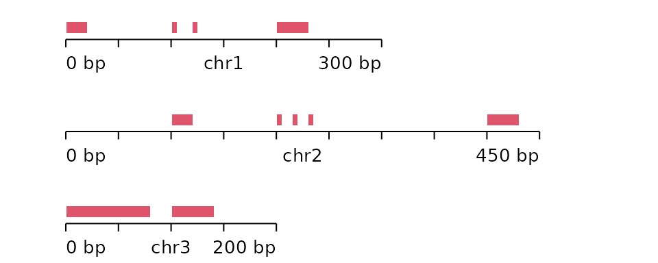
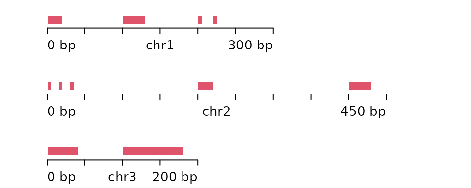
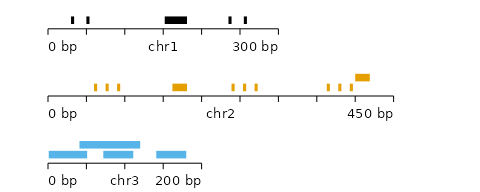
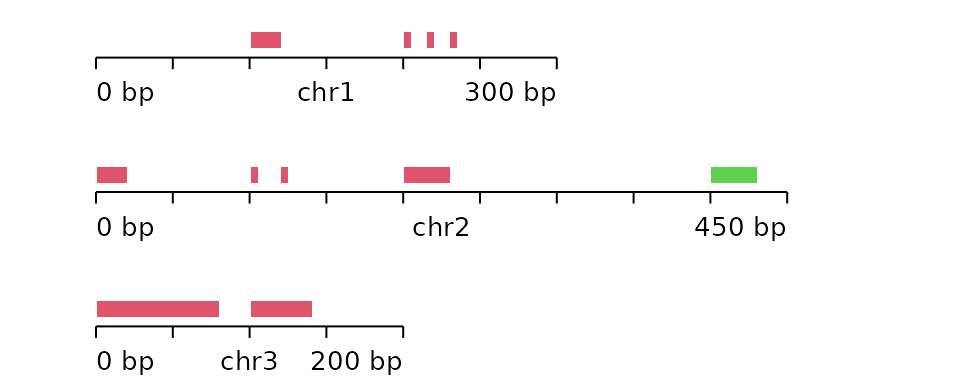
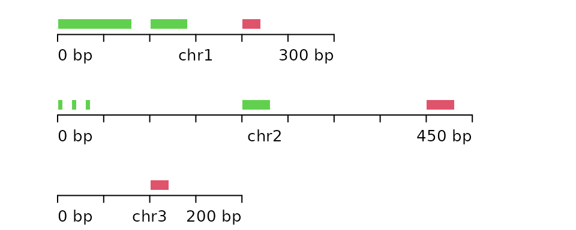
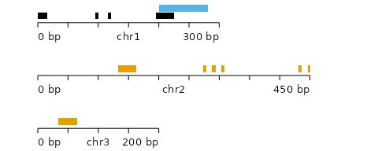

vignettes/unseg_boot_ranges.Rmd
unseg_boot_ranges.RmdIn this vignette, we demonstrate the un-segmented block bootstrap functionality implemented in nullranges. “Un-segmented” refers to the fact that this implementation does not consider segmentation of the genome for sampling of blocks, see the segmented block bootstrap vignette for the alternative implementation.
First download DNase hypersensitivity peaks in A549 from AnnotationHub. We subset to standard chromosomes and remove mitochondria (more work needed to handle these cases internally). Finally, we sort the features to be bootstrapped.
suppressPackageStartupMessages(library(AnnotationHub))
ah <- AnnotationHub()
pks <- query(ah, c("DnaseSeq", "narrowPeak", "A549", "UniPk"))[[1]]
library(GenomeInfoDb)
pks <- keepStandardChromosomes(pks)
seqlevels(pks) <- setdiff(seqlevels(pks), "chrM")
table(seqnames(pks))
pks <- sort(pks)
library(nullrangesData)
data("DHSA549Hg38")
pks <- DHSA549Hg38
# to get seqlengths only
suppressPackageStartupMessages(library(EnsDb.Hsapiens.v86))
edb <- EnsDb.Hsapiens.v86
filt <- AnnotationFilterList(GeneIdFilter("ENSG", "startsWith"))
g <- genes(edb, filter = filt)
g <- keepStandardChromosomes(g, pruning.mode = "coarse")
seqlevels(g, pruning.mode="coarse") <- setdiff(seqlevels(g), "MT")
seqlevels(g) <- paste0("chr", seqlevels(g))
genome(g) <- "hg38"
g <- sortSeqlevels(g)
seqlengths(pks) <- seqlengths(g)The following evaluates various types of bootstrap/permutation schemes, first within chromosome, and then across chromosome (the default). The default type is bootstrap.
set.seed(5) # reproducibility
library(microbenchmark)
blockLength <- 5e5
microbenchmark(list=alist(
p_within=bootRanges(pks, blockLength=blockLength, withinChrom=TRUE, type="permute"),
b_within=bootRanges(pks, blockLength=blockLength, withinChrom=TRUE),
p_across=bootRanges(pks, blockLength=blockLength, withinChrom=FALSE, type="permute"),
b_across=bootRanges(pks, blockLength=blockLength, withinChrom=FALSE)
), times=10)## Unit: milliseconds
## expr min lq mean median uq max neval
## p_within 1165.5475 1182.4045 1275.6425 1206.7982 1226.5439 1906.710 10
## b_within 1072.1953 1112.4500 1139.0702 1123.1152 1136.0442 1302.400 10
## p_across 224.2220 238.5502 475.6138 244.9470 977.3448 1000.300 10
## b_across 255.1547 260.5512 484.7579 269.6452 991.9350 1006.265 10We create some synthetic ranges in order to visualize the different options of un-segmented bootstrap. chrom will be used to color by chromosome of origin.
library(GenomicRanges)
seq_nms <- rep(c("chr1","chr2","chr3"),c(4,5,2))
gr <- GRanges(seqnames=seq_nms,
IRanges(start=c(1,101,121,201,
101,201,216,231,401,
1,101),
width=c(20, 5, 5, 30,
20, 5, 5, 5, 30,
80, 40)),
seqlengths=c(chr1=300,chr2=450,chr3=200),
chrom=as.integer(factor(seq_nms)))The following function uses functionality from BentoBox to plot the ranges.
suppressPackageStartupMessages(library(BentoBox))
plotGRanges <- function(gr) {
bb_pageCreate(width = 5, height = 2, xgrid = 0,
ygrid = 0, showGuides = FALSE)
for (i in seq_along(seqlevels(gr))) {
chrom <- seqlevels(gr)[i]
chromend <- seqlengths(gr)[[chrom]]
suppressMessages({
p <- bb_params(chromstart = 0, chromend = chromend,
x = 0.5, width = 4*chromend/500, height = 0.5,
at = seq(0, chromend, 50),
fill = palette()[2:4])
prngs <- bb_plotRanges(data = gr, params = p,
chrom = chrom,
y = 0.25 + (i-1)*.7,
just = c("left", "bottom"),
colorby=colorby("chrom"))
bb_annoGenomeLabel(plot = prngs, params = p, y = 0.30 + (i-1)*.7)
})
}
}
plotGRanges(gr)
Visualize two permutations of blocks within chromosome:
for (i in 1:2) {
gr_prime <- bootRanges(gr, blockLength=100, type="permute", withinChrom=TRUE)[[1]]
plotGRanges(gr_prime)
}
Visualize two bootstraps within chromosome:
for (i in 1:2) {
gr_prime <- bootRanges(gr, blockLength=100, withinChrom=TRUE)[[1]]
plotGRanges(gr_prime)
}
Visualize two permutations of blocks across chromosome. Here we use larger blocks than previously.
for (i in 1:2) {
gr_prime <- bootRanges(gr, blockLength=200, type="permute", withinChrom=FALSE)[[1]]
plotGRanges(gr_prime)
}
Visualize two bootstraps across chromosome:
for (i in 1:2) {
gr_prime <- bootRanges(gr, blockLength=200, withinChrom=FALSE)[[1]]
plotGRanges(gr_prime)
}